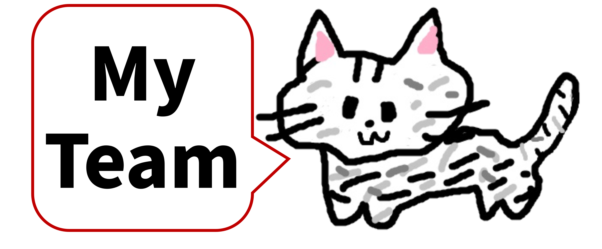
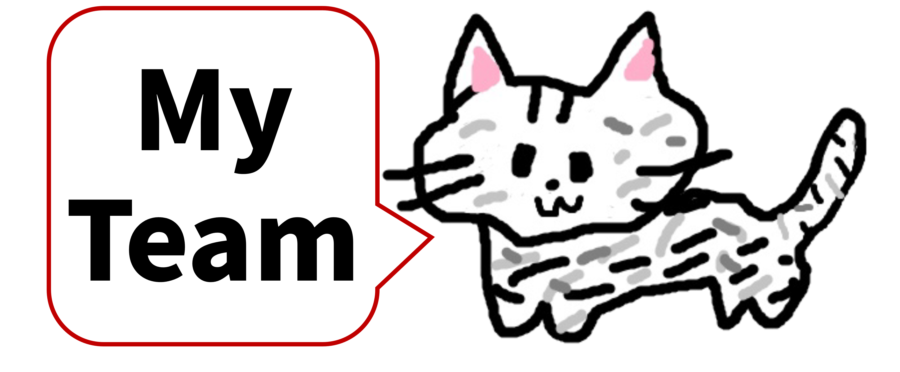

Go to R-CCS

Go to my team
Go to R-CCS

Go to my team

| 名前: | 内野 佑基 | |
| メール: | yuki.uchino.fe (at) riken.jp | |
| 所属: | 理化学研究所 計算科学研究センター | |
| 誕生日: | 1997年10月2日 | |
| 身長: | りんご14個 | |
| 体重: | りんご230個 | |
| 所属学会: |
日本応用数理学会 (2022.07-) 情報処理学会 (2025.04-) |
|
| 研究トピック: |
混合精度数値計算 数値線形代数 高性能計算 精度保証付き数値計算 |
| Name: | Yuki UCHINO | |
| Email: | yuki.uchino.fe (at) riken.jp | |
| Affiliation: | RIKEN Center for Computational Science | |
| Pronoun: | he / him / his | |
| Birth: | Oct. 02, 1997 | |
| Height: | 14 apples | |
| Weight: | 230 apples | |
| Membership: | JSIAM, IPSJ | |
| Interest: |
Mixed-Precision Computing Numerical Linear Algebra High Performance Computing Self-Validating Methods |
芝浦工業大学 システム理工学部
数理科学科 入学
芝浦工業大学 システム理工学部
数理科学科 卒業 (総代・首席)
学士 (数理科学) 取得
芝浦工業大学大学院 理工学研究科
システム理工学専攻 修士課程 入学
芝浦工業大学大学院 理工学研究科
システム理工学専攻 修士課程 修了 (総代・首席)
修士 (システム理工学) 取得
芝浦工業大学大学院 理工学研究科
機能制御システム専攻 博士後期課程 入学
日本学術振興会 特別研究員 DC1 採用
芝浦工業大学大学院 理工学研究科
機能制御システム専攻 博士後期課程 短縮修了
博士 (工学) 取得
日本学術振興会 特別研究員 DC1 中途辞退
国立研究開発法人理化学研究所
計算科学研究センター
大規模並列数値計算技術研究チーム 特別研究員
情報処理学会
論文誌コンピューティングシステム（ACS）編集委員
Enrolled in Department of Mathematical Sciences,
College of Systems Engineering and Science,
Shibaura Institute of Technology
Graduated from Department of Mathematical Sciences,
College of Systems Engineering and Science,
Shibaura Institute of Technology
Received B.S. in Mathematical Sciences
Enrolled in Systems Engineering and Science,
Graduate School of Engineering and Science,
Shibaura Institute of Technology
(Master's Program)
Completed Systems Engineering and Science,
Graduate School of Engineering and Science,
Shibaura Institute of Technology
(Master's Program)
Received M.S. in Systems Engineering and Science
Enrolled in Functional Control Systems,
Graduate School of Engineering and Science,
Shibaura Institute of Technology
(Doctor's Program)
Appointed as Research Fellowships for Young Scientists DC1
Early Completion of Functional Control Systems,
Graduate School of Engineering and Science,
Shibaura Institute of Technology
(Doctor's Program)
Received Ph.D. in Engineering
Resigned as Research Fellowships for Young Scientists DC1
Appointed as a Postdoctoral Researcher in
Large-Scale Parallel Numerical Computing Technology Research Team,
RIKEN Center for Computational Science, RIKEN